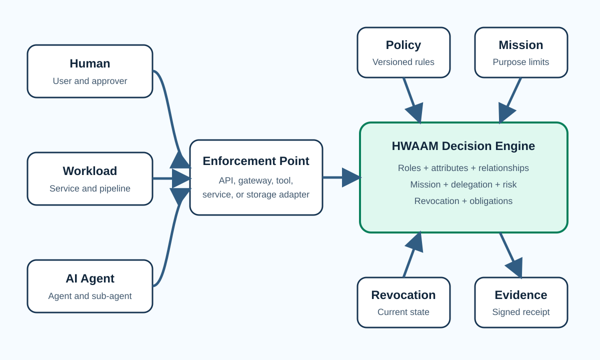

Principal chain
Human, workload, agent, sub-agent, and tool identities remain distinct.
Architecture

Human, workload, agent, sub-agent, and tool identities remain distinct.
Authorization is bound to an object, type, owner tenant, and resource attributes.
Purpose is converted into concrete action, resource, impact, time, output, and delegation limits.
Roles, attributes, relationships, approvals, risk limits, and obligations are versioned.
HWAAM returns allow, deny, or conditional_allow. Conditional decisions contain obligations such as approval, step-up authentication, session recording, or restricted output.